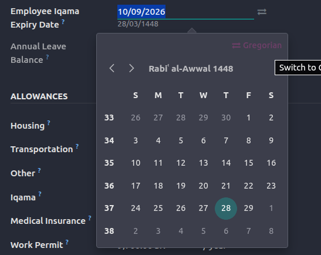
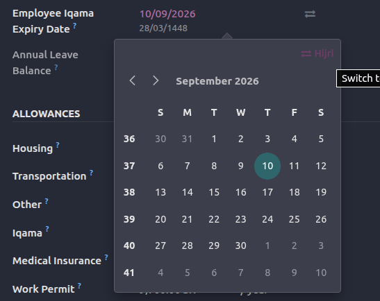

Get in Touch

This module adds a hijri_date widget for any date field. The value is stored as a normal Gregorian date in the database, while the Hijri equivalent is computed on the frontend using the browser's native Intl API (Umm al-Qura), and converted back to Gregorian before saving. A built-in Date Converter wizard lets you translate dates between the two calendars in either direction.


Dual Calendar Display
Every date shows both its Hijri (Umm al-Qura) and Gregorian values together.
Stored as Standard Date
Values are kept as normal Gregorian dates, so reports and filters keep working.
Accurate Conversion
Deterministic Umm al-Qura conversion via the browser's native Intl API.
Built-in Converter
A handy wizard to translate any date between the two calendars.
Just add the widget to any date field in your view:
<field name="some_date" widget="hijri_date"/>
يضيف هذا التطبيق أداة hijri_date لأي حقل من نوع تاريخ. يتم تخزين القيمة كتاريخ ميلادي عادي في قاعدة البيانات، بينما يُحتسب التاريخ الهجري المقابل في الواجهة الأمامية باستخدام واجهة Intl المدمجة في المتصفح (تقويم أم القرى)، ثم يُحوّل إلى الميلادي قبل الحفظ. كما يوفّر معالج تحويل التواريخ لتحويل التواريخ بين التقويمين في كلا الاتجاهين.
عرض التقويمين معًا
يظهر كل تاريخ بقيمته الهجرية (أم القرى) والميلادية في آنٍ واحد.
يُخزَّن كتاريخ قياسي
تُحفظ القيم كتواريخ ميلادية عادية، فتبقى التقارير والفلاتر تعمل كالمعتاد.
تحويل دقيق
تحويل دقيق لتقويم أم القرى عبر واجهة Intl المدمجة في المتصفح.
معالج تحويل مدمج
معالج عملي لتحويل أي تاريخ بين التقويمين الهجري والميلادي.
أضف الأداة إلى أي حقل تاريخ في العرض:
<field name="some_date" widget="hijri_date"/>